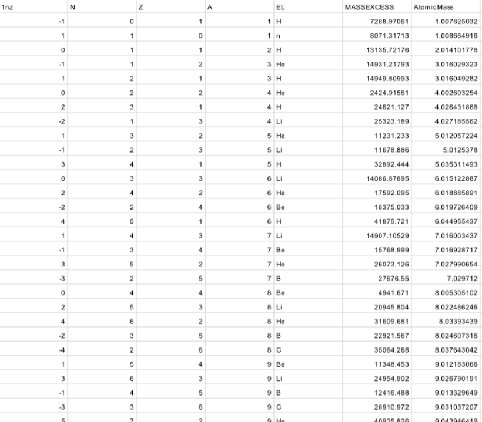
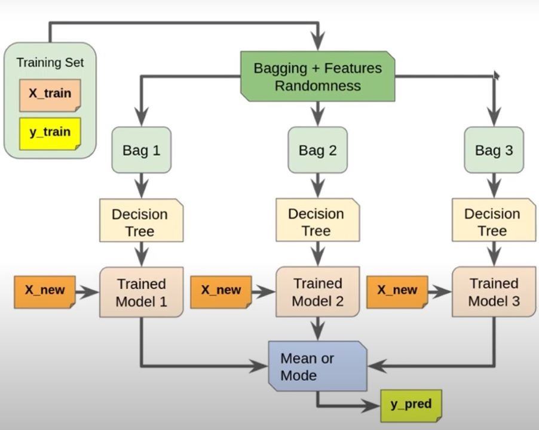

Model Machine Learning

Kebutuhan Data untuk Model
Jumlah proton, jumlah neutron, nomor massa, mass excess, energi ikat, kategori stabilitas.

Random Forest
Random Forest adalah algoritma pembelajaran mesin berbasis ensemble yang menggabungkan prediksi dari banyak decision tree untuk meningkatkan akurasi dan mengurangi risiko overfitting. Algoritma ini fleksibel dan sering digunakan untuk tugas klasifikasi dan regresi.

Klasifikasi Stabilitas Inti
Stabil, sangat stabil, radioaktif, dan sangat radioaktif.